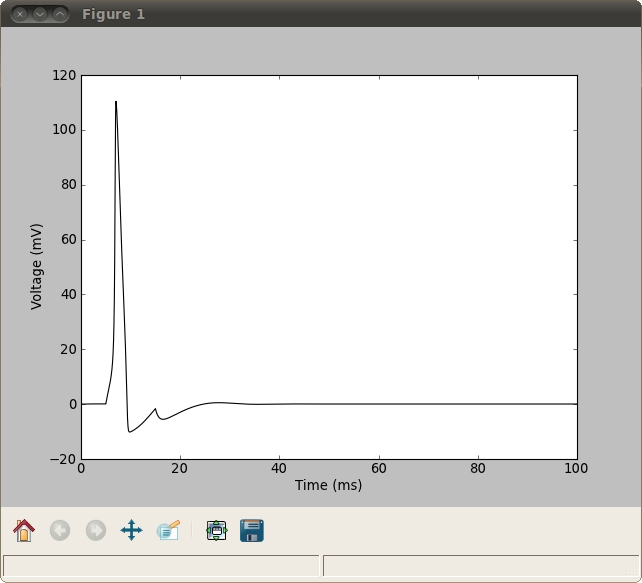
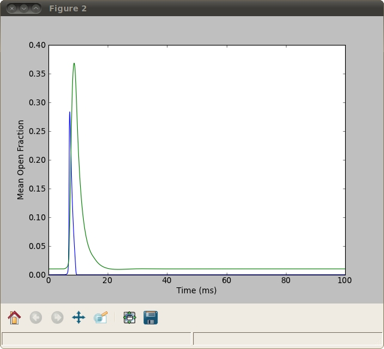
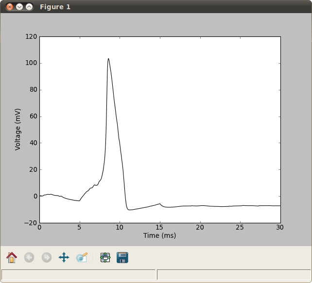

README
StochasticHH_ObjectOriented.py
Author: Alan Leggitt
5-11-2012
This code is a re-implementation of Matlab code written by Joshua
Goldwyn. The original Matlab code can be found at
http://faculty.washington.edu/etsb/tutorials.html
This version runs best using Pylab from the Enthought Python
Distribution 7.2 For more information visit www.enthought.com
For more information, contact Alan Leggitt at alan.leggitt@ucsf.edu
Using the Code
--------------
To get started use the following commands in a Pylab terminal (see
http://enthought.com/products/epdgetstart.php):
run StochasticHH_ObjectOriented
n = Neuron()
n()
This will output two figures, one of voltage vs. time,

the other of Fraction of ion channels vs. time, similar to Fig 1B:

setting the second parameter in the time array to 30.01 (default
100.1) for a faster run and setting the model to Markov chain:
run StochasticHH_ObjectOriented
n=Neuron(timeArray=arange(0,30.01, 0.01), noiseModel="MarkovChain")
n()
we get a result similar to Fig 1A, although for expedience a current
injection is included here:

The Neuron class has some default values: a time array of 0 to 100 in
increments of 0.01 ms, an input current array with a 10 ms step
current, a noise standard deviation of 10, an area of 100 cm**2, and a
noise model (no noise). Any of these parameters can be changed, using
the following guidelines
Parameters
----------
timeArray - array of times
inputCurrent - an array of input current values, must be the same
length as time
noiseSTD - the standard deviation of the noise
area - the area of the neuron
noiseModel - model for the input noise, must be a string
ODE - no input noise
Current - noise added to current input
Subunit - noise added to subunit variables
VClamp - voltage clamp conductance noise, Linaro et al model
FoxLuSystemSize - system size conductance noise, Fox and Lu
model
MarkovChain - Markov Chain model
For example...
run StochasticHH_ObjectOriented
t = arange(0,100,0.01)
n = Neuron(timeArray=t,inputCurrent=sin(t),noiseSTD=5,area=50,noiseModel='Current')
n()
Will generate the same two plots using the above parameters.
Note: Any number of these parameters can be specified. Those that are
left unspecified will use the default values.
Functions
---------
The Neuron class has the following functions
solveStochasticModel - solve the Hodgkin Huxley model using the noise
model
plotVoltage - plot the voltage vs. time
plotChannelFractions - plot fractions of both ion channel types
vs. time
The Neuron class also has a call function installed, so that running
the following
run StochasticHH_ObjectOriented
n = Neuron()
n()
Will automatically call all three of the above functions. These
functions can also be called manually. For example...
run StochasticHH_ObjectOriented
n = Neuron()
n.solveStochasticModel()
n.plotVoltage()
n.plotChannelFractions()
Note: solveStochasticModel must be called before either plotting
function.
Plotting
--------
Each plotting function can also be called with an axis specified. For
example...
run StochasticHH_ObjectOriented
fig = figure()
ax1 = fig.add_subplot(211)
ax2 = fig.add_subplot(212)
n = Neuron()
n.solveStochasticModel()
n.plotVoltage(ax=ax1)
n.plotChannelFractions(ax=ax2)
Will plot each output plot on a separate subplot.
These plotting functions use default linestyles. The default for
voltage is a solid black line.
The default for fraction of Na Channels is a blue line and the default
for fraction of K Channels is a green line.
These linestyle parameters can also be changed, which allows for super
imposing different neuron plots. For example...
run StochasticHH_ObjectOriented
fig = figure()
ax = fig.add_subplot(111)
n1 = Neuron()
n2 = Neuron(noiseModel='Current')
n1.solveStochasticModel()
n2.solveStochasticModel()
n1.plotVoltage(ax=ax,lineStyle='k')
n2.plotVoltage(ax=ax,lineStyle='r')
20120515 python script updated with state variable permutation bug fix.